Modelica Newsletter 2014-3
Newsletter #3 of 2014 (News from Modelica Association, from Modelica related projects and from Modelica tool vendors)
Table of Contents
- Letter from the Board
- Modelica Association News
- Modelica 3.3 Revision 1 Released
- FMI 2.0 Released
- FMI 2.0 Services
- FMI Cross-Check Rules Revised
- New MA Project SSP
- Modelica Conference 2015, Palais des Congrès de Versailles, September 21-23
- North American Modelica Users' Group Conference 2014
- Educational News
- Wolfram SystemModeler Virtual Conference
- CFP - OpenModelica and MODPROD Workshops Feb 2015
- New Big Modelica 3.3 rev 1 Book
- Dymola and Modelica training courses
- Training Courses for Modelica and TIL
- Certified Dymola and Modelica Courses for Professionals
- Call For Paper for JSAE2015 in May, 2015 in Japan
- Tour of Modelica: Web-Based Introduction to Modelica
- Library News
- Heat Transfer Library
- AixLib Released
- Wolfram Hydraulic
- Wolfram ModelPlug
- Fuel Cell Library features now a flexible manifold structure
- Heat Exchanger Library now supports condensation
- Hydraulics 4.1, beyond thermo hydraulics
- Improved usability and performance in Thermal Power 1.9
- Vehicle Dynamics 2.0 is released
- Vapor Cycle Library now contains an Organic Rankine Cycle
- Vendor News
- Wolfram SystemModeler 4 Released
- Siemens PLM Software supports the FMI 2.0 initiative
- Virtual software validation: ETAS Virtual ECU (EVE) complies with FMI standard
- RegressionTest Tool for Dymola
- Equation-Based Modelica Model Debugger
- FMI Blockset for Simulink 2014.1
- New release for FMI Library: 2.0.1
- PyFMI 2.0b1 now available
- FMI Toolbox for MATLAB/Simulink version 1.8.3 released
- JModelica.org 1.15b1
- LMS Imagine.Lab Amesim™ Provides State-of-the-art Platform Features for Modelica Users
- OpenModelica 1.9.1 final Release
- Data-based modeling and model-based calibration with ETAS ASCMO: Now also support of FMI standard
- Dymola 2015 FD01
- TLK FMI Suite - Simulation of simulator independent models
- TLK DaVE - Data Visualization Environment
- Dassault Systèmes Announces Extended FMI Support
- Latest MapleSim release offers new tools for design exploration
Letter from the Board
Dear Modelica and FMI interested,
The Modelica Association continues its successful conferences on Modelica and FMI: The 11th International Modelica Conference will take place on Sept. 21-23, 2015 near Paris. For more details, see below.
The Modelica Association board was newly elected on June 17, 2014 for the coming two years period. The new board is identical to the previous board with one exception: There was no applicant for the board position for Quality and Processes and therefore this position is vacant now.
The adoption of the Functional Mockup Interface (FMI) standard has exceeded our expectations. When I looked today on the FMI Tools Page, 53 tools are listed that support FMI 1.0, and additionally 7 tools are listed that plan to support FMI 1.0. So, FMI is becoming a widely available technology to exchange models. After a tremendous amount of work of the people from the FMI group, the new version 2.0 of FMI was released in July 2014. For more details see below.
If you have interesting news for the Modelica and FMI community, please contact the newsletter editor (Michael Tiller) for information on how to submit newsletter articles for possible inclusion in the next newsletter. The deadline for articles for the next newsletter is February 15, 2015.
Martin Otter on Nov. 4, 2014
(Chairman of the Modelica Association)
Modelica Association News
Modelica 3.3 Revision 1 Released
The Modelica language specification 3.3 Revision 1 was released on July 11, 2014. The specification text is available here in pdf format. This version clarifies and fixes issues of the specification text. In particular it includes all updates made in the Modelica language specification 3.2 Revision 2. An overview of the improvements is available from here. This version of the specification is mainly important for Modelica tool vendors, in order that all tools interpret the Modelica standard in the same way.
This article is provided by Martin Otter (DLR-SR)
FMI 2.0 Released
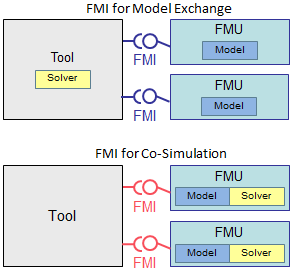
The Functional Mockup Interface Version 2.0 was released on July 25, 2014. FMI is a tool independent standard to support both model exchange and co-simulation of dynamic models using a combination of xml-files and C-code (either compiled in DLL/shared libraries or in source code). The first version, FMI 1.0, was published in 2010. Enhancements of FMI 2.0 over FMI 1.0:
- FMI for Model Exchange and for Co-Simulation have been merged into one standard. As a consequence, a single FMU (Functional Mockup Unit) can now include both a Model Exchange and a Co-Simulation version of the same model and the decision as to which version to use is only made when instantiating the FMU.
- Many practical issues of FMI 1.0 have been fixed. For example, in Model Exchange there was no standard way to access additional files of an FMU like maps and tables. In FMI 2.0, the absolute path to the directory where these files are locally stored is passed to the FMU. Furthermore, FMUs based on DLLs can have a generic file name in FMI 2.0, in order that one FMU can be used as pure communication unit to any model supported by the underlying co-simulation tool.
- Parameters can be optionally changed during simulation. This allows for example online-tuning of parameters of a controller.
-
The internal FMU state can be optionally saved, restored, and copied into a byte vector.
It is then possible to save the state of an FMU at a particular time instant during
simulation and continue from this state at any time. Furthermore, this simplifies
the implementation of more advanced master algorithms with variable step size
and error control, by saving the state of a co-simulation slave, and repeating a
doStepcall from the original time instant with a smaller step size. - The sparse structure of the partial derivatives with respect to continuous-time states and to inputs can be optionally stored in the xml-file of the FMU. This allows handling of large models with > 1000 continuous-time states.
- An FMU can optionally provide analytic directional derivatives with respect to continuous-time states and to inputs. This allows a more robust and efficient simulation of systems where these partial derivatives are needed, for example for stiff solvers.
- A cleaner mathematical model of an FMU both for Model Exchange and for Co-Simulation was defined. For Model Exchange this means that "super-dense" time was introduced to describe the event iteration more precisely, and that algebraic loops over FMUs are supported in initialization, event, and continuous-time mode (in FMI 1.0, it was not possible to have algebraic loops in initialization or event mode).
The FMI 2.0 specification, as well as supporting C-header and xml schema files can be found on the FMI Downloads page
This article is provided by Torsten Blochwitz (ITI GmbH) and Martin Otter (DLR-SR)
FMI 2.0 Services
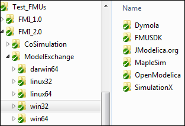
On the Downloads page of the FMI web site, the following free services around FMI 2.0 are now available:
- An FMI 2.0 compliance checker to check whether an FMU is built according to the FMI 2.0 standard.
- An FMITest Modelica library with more than 30 difficult test cases of connected FMUs (for example connecting two FMUs in such a way that Boolean input and output variables form a loop, but the dependency information makes it possible to find a sequential evaluation sequence of the FMU calls).
- The FMU Software Development Kit (FMU SDK) of QTronic supporting FMI 2.0. It can serve as a starting point for developing applications that export or import FMUs.
- The FMI Library of Modelon supporting FMI 2.0. It supports the import of FMUs in applications. The FMI Library is for example used in the FMI Compliance Checker.
- In the near future, test FMUs from different tool vendors will be provided for different platforms (Windows, Linux, Mac). The goal is that whenever a tool with FMI 2.0 support is released, corresponding test FMUs from this tool are provided publicly. This allows other tool vendors to easily test the import of these FMUs. Test FMUs from Dymola, FMUSDK, JModelica.org, MapleSim, OpenModelica and SimulationX are already available on the internal FMI svn (see screenshot at the right side) and will be made available publicly, once the corresponding tool with FMI 2.0 support is released.
This article is provided by Martin Otter (DLR-SR)
FMI Cross-Check Rules Revised
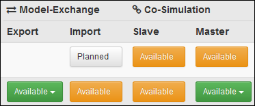
On the Tools Page of the FMI web site tools are listed that support FMI. A color coding is used to indicate whether a tool has been tested to import FMUs of other tools or to export FMUs. The color coding further indicates whether these FMUs have been successfully imported by other tools. The rules for this table have been revised.
With the release of FMI 2.0, more tool vendors have joined the Cross-Check initiative. A number of improvement suggestions were made -- especially during the FMI Plug-Fest in May 2014 -- regarding how to better communicate the Cross-Check results and how to ease cross checking by tightening the rules for what to submit to the repository.
The most important changes to the Cross-Check Rules are:
- clearer rules for what to submit with FMUs and the Results to ease scripted cross checking,
- stricter rules on how to attain the "green" Available tag (see screenshot to the right) to encourage more meaningful tests and
- added provisions for FMUs with c-code only and FMUs with runtime license checks.
End of July 2014, the FMI Steering Committee approved V3 of the Cross-Check Rules. This new set of rules has been applied to the Cross-Check infrastructure's non-public part. At the end of 2014, the Cross-Check Results will be published according to the new rules. Vendors are encouraged to update their results with the most recent, released versions of their products.
This article is provided by Andreas Junghanns (QTronic GmbH)
New MA Project SSP
The new Modelica Association Project System Structure and Parameterization of components for virtual system design (SSP) was established on June 17, 2014. This project was initiated by Bosch, BMW and ZF. In many applications there is a need to design, simulate and execute a network of components (simulation models, software, hardware etc.). In order to make this process seamless and tool independent, the SSP project was initiated. The purposes of this project are:
- Define a standardized way to store and apply parameters to these components.
- Define a standardized format for the connection structure for a network of components.
- The developed standard / APIs should be usable in all stages of the development process (architecture definition, integration, simulation, test in MiL, SiL, HiL).
It is planned to coordinate this work with other standards and organizations (FMI, ASAM, OMG). For more information, see MAs project page.
This article is provided by Martin Otter (DLR-SR)
Modelica Conference 2015, Palais des Congrès de Versailles, September 21-23
The Modelica Association, Dassault Systèmes and Linköping University are proud to announce the 11th International Modelica conference. The conference will take place at Palais des Congrès de Versailles, west of Paris, France, September 21-23, 2015. A call for papers and further information will be provided soon through the Modelica web site and other channels. Please reserve the date, write a good paper and come to Paris to join the most important event for being informed about the latest developments and use of Modelica and FMI.
This article is provided by Hilding Elmqvist (Dassault Systèmes AB, Lund) and Martin Otter (DLR-SR) and Peter Fritzson (Linköping University)
North American Modelica Users' Group Conference 2014
The North American Modelica Users' Group Conference for 2014 was held at Georgia Tech in Atlanta from October 13th to 14th. The event was sponsored by Maplesoft, Modelon, Wolfram, Siemens, Dassault Systèmes and ANSYS. The conference featured keynote presentations from Prof. Edward Lee (Berkeley) and Dr. Clas Jacobson (United Technologies) as well as 9 presentations discussing applications of Modelica.
Interest in Modelica is clearly growing. There were 63 attendees this year compared to 29 attendees for last years event, an increase of over 100%. We want to thank all of this years attendees for their participation and we look forward to seeing all of you and more next year.
We have not yet decided on the timing and location for our next event. But if you are interested, please subscribe to the NA-MUG mailing list so you will be informed as details become available.
This article is provided by Michael Tiller (Xogeny) and Hubertus Tummescheit (Modelon AB)
Educational News
Wolfram SystemModeler Virtual Conference
The Wolfram SystemModeler Virtual Conference was held September 16. All materials including recorded videos are now available from the conference page.
In this free, online event for users at all levels, a general overview of SystemModeler is followed by a more in-depth look at new Version 4 capabilities.
Presentations from the Wolfram Technology Conference 2014 are also available online from the conference page.
The conference featured multiple Wolfram SystemModeler talks, including presentation of new features. It covers all major Wolfram technologies and the many applications made possible with them.
This article is provided by Jan Brugård (Wolfram MathCore)
CFP - OpenModelica and MODPROD Workshops Feb 2015
Location: Linköping University, Sweden
- 9th MODPROD Workshop on Model-Based Product Development, Feb 3-4, 2015
- 7th OpenModelica Annual Workshop, Feb 2, 2015
Special theme for this year: Open Source
Keynote for OpenModelica workshop
- Rüdiger Franke, Specialist in Process Optimization Technology, ABB AG, “Treatment of Mathematical Optimization Programs for Dynamic Systems with OpenModelica”
Keynotes for MODPROD Workshop
- Francis Bordeleau, Product Manager SW Development, Ericsson. “Open Source Modeling - Main Motivations and Key Challenges!”
- Claude Gomez, CEO at Scilab Enterprises. “Why using Scilab Open Source Software for Numerical Computation in Model-Based Development?”
- Sébastien Gérard, Head of the LISE labs and leader of the Eclipse Papyrus project. “Model-Driven Engineering: Authoring and Exploiting Models”
- Kannan Moudgalya, Prof. at IIT Mumbay and head of spoken-tutorial.org project. “Massive Online Teaching of Programming and Simulation Using Open Source”
Deadline for submissions of abstracts or draft presentations/papers: Early Nov, 2014.
The workshops are concerned with, but not limited to, the following themes:
MODPROD Workshop
- Cyber-physical system modeling.
- Integrated hardware-software modeling.
- Hardware modeling.
- Software modeling.
- Co-modeling, Co-simulation, FMI
- Multi-body systems.
- Multi-domain/Multi-physics, e.g. electrical-hydraulic.
- Modelica-UML-SysML.
- Modeling and simulation tools.
- CAD modeling.
- Design optimization and analysis.
- Hardware in the loop simulation.
- Multi-core simulation.
- Real-time and embedded system modeling.
- Electrical/hydraulics modeling.
OpenModelica Annual Workshop
- Applications of OpenModelica.
- Modelica Libraries with OpenModelica.
- Industrial Use Cases with OpenModelica.
- OpenModelica in teaching and research.
- OpenModelica tool developments.
- Solver issues in OpenModelica.
- Meta modeling and hardware/software modeling.
- Code generation in Openmodelica.
- Parallel compilation and execution.
- Model-based optimization.
For more information, see www.openmodelica.org and www.modprod.liu.se .
This article is provided by Peter Fritzson (Linköping University)
New Big Modelica 3.3 rev 1 Book
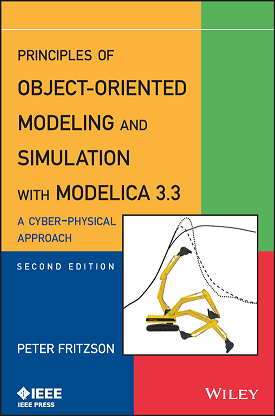
The new big Modelica book “Principles of Object-Oriented Modeling and Simulation with Modelica 3.3: A Cyber-Physical Approach, 2nd edition” by Peter Fritzson, is the most complete text available about the Modelica language and its model component libraries.
The second edition features improvements and updates of the Modelica language including synchronous clocked constructs, and examines basic concepts of cyber-physical, equation-based, object-oriented system modeling and simulation. Professor Peter Fritzson introduces the Modelica class concept and its use in graphical and textual modeling with several hundred examples from many applications areas and explores modeling methodology for continuous, discrete, and hybrid systems; and more. The book:
- Includes improvements and revisions of the Modelica language from the previous version throughout the book.
- Provides a complete yet informal overview of the Modelica 3.3 language including new Modelica 3.3 clocked synchronous features useful for embedded systems.
- Examines basic concepts of cyber-physical (i.e. integration of software and hardware), equation-based, object-oriented system model and simulation
- Introduces the Modelica class concept and its use in graphical and textual modeling
- Explores modeling methodology for continuous, discrete, and hybrid systems
This text is aimed at System Modeling and Simulation engineers and students, control engineers and those working with CAD (Computer Aided Design), virtual reality, biochemistry, embedded systems, and data communication.
The book is 1256 pages, provides downloadable exercises and solutions, of which most are available in the DrModelica self-teaching Modelica course document within the OpenModelica distribution, www.openmodelica.org , and uses the Modelica language standard version 3.3 revision 1.
Information is also available at the book home page, at Wiley and at Amazon
Principles of Object-Oriented Modeling and Simulation with Modelica 3.3: A Cyber-Physical Approach, 2nd
Edition
Peter Fritzson
ISBN: 978-1-118-85912-4
Paperback, 1256 pages
January 2015, Wiley-IEEE Press
This article is provided by Peter Fritzson (Linköping University)
Dymola and Modelica training courses
Claytex offers a range of training courses for Dymola and Modelica and is now a Certified Education Partner of Dassault Systemes.
Our training courses are delivered as part of our open training courses or as part of a customer specific training program. We can also customise the courses to make sure that all the key topic areas for your application are covered.
Our open courses for the rest of 2014 are now fully booked. The next available training courses are listed below:
- 20-22 January 2015 - Introduction to Dymola and Modelica (UK)
- 10-12 March 2015 - Introduction to Dymola and Modelica (UK)
- 12-14 May 2015 - Introduction to Dymola and Modelica (UK)
This article is provided by Mike Dempsey (Claytex Services Limited)
Training Courses for Modelica and TIL

TLK-Thermo offers two day Modelica training courses for learning basic and advanced object oriented modeling. The Modelica course is an introduction to the most important features of Modelica, including numerical aspects. With many practical exercises the participants will learn how to design and implement Modelica libraries (not only within thermal science).
Furthermore, we are offering a one day course for thermal system modeling with the Modelica library TIL. The training course is directed towards simulation and modeling specialists with basic knowledge of the Modelica programming language. It can be seen as an advanced course to the basic Modelica training.
Upcoming courses:
- Modelica training: December 3rd - 4th, 2014
- Introduction to TIL: December 5th, 2014
For further Information see www.tlk-thermo.com
This article is provided by Matthias Kwak (TLK-Thermo GmbH)
Certified Dymola and Modelica Courses for Professionals
Modelon offers certified Dymola and Modelica training for both new and experienced professional users in industry and academia. We have scheduled courses in Europe, USA, and now also Japan, and give courses world-wide and on-site on demand. Upcoming training events:
- November 10-14, 2014, Ann Arbor, USA: Dymola Introduction Course
- November 24-28, 2014, Lund, Sweden: Dymola Introduction Course
- February 2-6, 2015, Tokyo, Japan: Dymola Introduction Course
- March 2-6, 2015, Lund, Sweden: Dymola Introduction Course
- March 16-20, 2015, Munich, Germany: Dymola Introduction Course
- April 20-24, 2015, Tokyo, Japan: Dymola Introduction Course
- May 18-22, 2015, Lund, Sweden: Dymola Introduction Course
See our schedule for additional events. See our full catalog for a listing of all available courses, also for libraries and specific industry domains and applications. Please contact us for further information or register here.
This article is provided by Adina Tunér (Modelon AB)
Call For Paper for JSAE2015 in May, 2015 in Japan
Organized Sessions about Model-based Development (especially using Modelica) and also about FMI are now planned in JSAE (Society of Automotive Engineers of Japan) Annual Congress which will be held in May 20 - 22, 2015 in Yokohama, Japan. Presentations regarding tools, automotive applications and future directions about both Modelica and FMI are highly sought for this Congress based on recent high interest about Modelica and FMI in Japan. People involved with Modelica and FMI who wish to make presentations about their tools and applications to the automotive industry in Japan are highly welcomed to present their paper in the Congress. The deadline for the abstruct submission is December 4, 2014.
For additional details about the Congress, please refer to the web site below.
http://www.jsae.or.jp/2015haru/index_e.html
This article is provided by Yutaka Hirano (Toyota Motor Corporation)
Tour of Modelica: Web-Based Introduction to Modelica
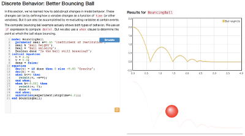
At the recent North America Modelica Users' Group Conference in Atlanta, Xogeny presented a web-based Modelica tutorial that demonstrates some of our web-based engineering analysis technologies. It provided a basic introduction to Modelica with a focus on representing behavior at the equation level. Because we received a lot of positive feedback about the tutorial, we've decided to make the Modelica community at large aware of it.
The tutorial can be found on the Tour of Modelica website, hosted by Xogeny. This web-based approach does not cover the entire Modelica language and should be viewed as a complement to the freely available Modelica by Example book also hosted by Xogeny.
Our goal, with both projects, is to make Modelica more accessible to new developers. With this new web-based approach, learning Modelica is easier than ever and with an even greater degree of interactivity than we achieved with Modelica by Example. Through the use of responsive design, this application runs on both desktops and a variety of mobile devices as well.
Please let us know what you think.
This article is provided by Michael Tiller (Xogeny)
Library News
Heat Transfer Library
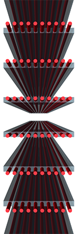
The steady-state heat exchangers from the Heat Transfer Library make efficient simulation possible for a wide variety of industries, including automotive, power plant, renewable energy, food and drink, oil and gas, and industrial cooling. The heat exchangers model the thermal connection between circuits of different fluids, even fluids from different libraries, such as Hydraulics, Pneumatics and Thermal Fluids. This enables a multi-physics analysis of the system to be studied.
The library comes with five different types of ready-to-use heat exchangers using the NTU-method: Fin-And-Tube, Double-Pipe, Plate, Microchannel and Shell-And-Tube. These elements are intended for fast calculation and are well suited for real-time simulation. Parameterization of the elements is geometry-based and easily be done using a data sheet from the heat exchanger manufacturer. The heat exchanger geometry can be viewed in the SimulationX 3D-view, making it easy to check for parameterization errors.
For fluids undergoing phase change, the heat exchange area is broken down into three regions (liquid, two-phase and gas), with each region having its own heat transfer coefficient. Additional features of the heat exchangers include:
- Compatibility to all SimulationX fluid libraries
- Customizable geometry, material and flow arrangements
- Heat transfer coefficient can be set or calculated depending on geometry and flow conditions
- Valid in one-phase and two-phase regions
- Constant or time varying definition of fouling factors
- Contain a variety of physics-based pressure drop and heat transfer correlations
- Possible to define custom heat transfer or pressure loss correlations
Learn more about the Steady-State Heat Exchangers and the Heat Transfer library in SimulationX in the accompanying datasheet. There is also a new video available to demonstrate how to create a model connecting fluid circuits from different libraries using a heat exchanger in SimulationX.
This article is provided by Manuela Joseph (ITI GmbH)
AixLib Released
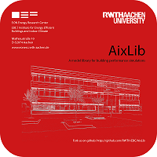
As part of its IEA EBC Annex 60 participation, the Institute for Energy Efficient Buildings and Indoor Climate, E.ON Energy Research Center, RWTH Aachen University released “AixLib”, a Modelica model-library with over 400 items that focuses on building performance simulations. Following the Annex 60 approach, it will be based on common base classes and extend the currently developed Annex 60-library. AixLib is being developed for research and teaching purposes and follows an open-source approach. In this way, it is ready-to-use and supports a native way of getting used to building performance simulation in Modelica. It aims at dynamic simulations of thermal and hydraulic systems to develop control strategies for HVAC systems and analyse interactions in complex systems. AixLib encompasses basic components, models for HVAC systems, models for building physics on different levels of detail and exemplary data sets for all models. It can be applied on component, building and city district level. It is freely available under Modelica License 2 and can be downloaded at https://github.com/RWTH-EBC/AixLib. The library has been developed in the simulation environment Dymola, further developments include support of OpenModelica. We welcome you to take part in this development and to raise issues using github.
Contact: aixlib@eonerc.rwth-aachen.de
This article is provided by Moritz Lauster (E.ON Energy Research Center )
Wolfram Hydraulic
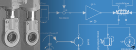
A new Hydraulic library from Wolfram is now available. The Wolfram Hydraulic library adds complete hydraulic functionality to Wolfram SystemModeler's already powerful modeling capabilities. All common components such as valves, cylinders, pumps, tanks, accumulators, and pipes can be connected in arbitrary hierarchical layouts. These components can also be used together with libraries in other domains, such as the automotive or aerospace fields.
This article is provided by Jan Brugård (Wolfram MathCore)
Wolfram ModelPlug
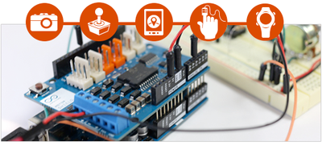
The new Wolfram ModelPlug library is now available. It allows you to link your simulation models to the real world by the use of an Arduino board (or any other board following the Firmata protocol). ModelPlug opens up a wide variety of ways to interact with your models, for example, by using buttons, switches, input sensor information, or even actuators such as motors and servos.
This article is provided by Jan Brugård (Wolfram MathCore)
Fuel Cell Library features now a flexible manifold structure
The Fuel Cell Library is a model library for modeling, simulation, analysis and control design of fuel cells.
Fuel Cell Library 1.3 is now available and it contains quite some exciting features, the main improvement being a flexible modeling structure for manifolds, with support for both external and internal manifolds. The library has now built-in for modeling of different flow configurations: U-flow, Z-flow, Mid-flow, equally distributed flows or any combination of the above meantioned. Also included are predefined manifolds with inlet/outlet at the top, bottom or in the middle of the stack.
- New manifold structure implemented in the templates
- Support for both co-flow and counter flow in templates
- New example: SOFC system with energy recovery (micro-gas turbine)
This article is provided by Carl Wilhelmsson (Modelon AB)
Heat Exchanger Library now supports condensation

The Heat Exchanger Library is used for heat-exchanger design, dimensioning, positioning and stacking. A new version containing valuable new features and improvements is now available from Modelon. It contains among other things:
- Support for moist air and condensation on the ambient side of the heat exchanger
- More detailed representation of the air side pressure drop and heat transfer, optimized for simulation of stand-alone heat exchangers with high resolution gridded boundary conditions
- More detailed representation of the air side pressure drop and heat transfer, for heat exchanger stack models.
- Added the possibility of computing the total internal liquid or working fluid volume and mass.
This article is provided by Carl Wilhelmsson (Modelon AB)
Hydraulics 4.1, beyond thermo hydraulics

The Hydraulics Library is a model library usable to model hydraulics systems and suitable for all industries that involve hydraulic components and applications. Hydraulics also contains "elements" which allow the user to put together own custom fundamental components, like valves, spools, pistons, etc. using "drag and drop" modeling.
Thermo Hydraulics is included since Hydraulics library 4.0 (spring of 2014). The new Hydraulics Library, 4.1 goes far beyond this. The newly added ThermoFluidAdaptor gives the possiblity to connect hydraulic systems with any other of Modelons thermo-fluid libraries enabling to take Modelica based system modeling of hydraulic systems to the next level. Some highlights of the new release are listed below.
- New example showing thermo hydraulics and the new ThermoFluidAdaptor: a Heat Exchanger
- Library is re-organized with a much cleaner structure and improved examples
- Significant improvements of the documentation; each component have detailed information section
- A completely newly developed generic pump model, “RotaryActuator”
- Automatic computation of system-wide oil-mass and volume
- Models of wall heat conductance
- New extrapolation options for tabular oils
This article is provided by Carl Wilhelmsson (Modelon AB)
Improved usability and performance in Thermal Power 1.9
The Thermal Power Library is a model library for design and commissioning of thermal power plants, including steam and combined cycle power plants. The new release of Thermal Power Library has been substantially improved with respect to simulation performance and usability. We especially want to highlight a new way to compute system global parameters and the possibility to model sub-cool and super-heat.
- New system component used to set global system settings and to automatically sums up volumes, energy and mass in component models and wall models
- New 3-zone pre-heater model making it possible to simulate sub-cool and super-heat effects
- Benson separator improved with outlet vapor quality
- More efficient implementation of two-phase and gas lumped pipe model yielding faster simulations
- Restructuring of metal material properties model to make them Modelica compliant.
- Downcomer and riser models now takes static head into account
This article is provided by Carl Wilhelmsson (Modelon AB)
Vehicle Dynamics 2.0 is released
The Vehicle Dynamics Library is a model library for modeling and simulation of vehicle dynamics, including chassis and powertrain. A new release of the Vehicle Dynamics Library, 2.0, is now available from Modelon containing lots of improvements such as:
-
Support for the Pacejka '94 'Magic Formula' contact force model has been added. The Pacejka '94 contact force model provides the benefit that it requires fewer coefficients than newer models; is more commonly used than the Pacejka '02 model; and is used in many other vehicle dynamics software products. By supporting this contact force model natively in VDL, the Pacejka '94 tire coefficients can be shared between VDL and other simulation tools.
-
A new live tire suspension test rig has been added that allows the application of external forces and torques at either the contact patch or wheel center/hub. It is the intent of this new rig to be able to better mimic the actual physical tests.
-
Ground Proximity Sensors added, ground proximity information is commonly required in vehicle dynamics simulations. E.g. for contact calculations for wheels or ride heights for aerodynamics calculations and ground impacts.
-
Ride Height Dependent Aerodynamics Models. Four new aerodynamics models have been added that are dependent on front/rear ride heights. The different models demonstrate how to represent lift/drag/side aerodynamic forces.
This article is provided by Carl Wilhelmsson (Modelon AB)
Vapor Cycle Library now contains an Organic Rankine Cycle
The Vapor Cycle Library is a model library for design of vapor-cycle or vapor-compression cycle based systems. The library is ideally suited for e.g. residential heating/cooling systems, automotive air-conditioning or industrial refrigeration. Modelon is glad to announce that Vapor Cycle Library 1.2 is available. It contains lots of new features. Especially to highlight is the awaited Organic Rankine Cycle (ORC) example.
- A static reversible valve which can be used in architectures that change operation mode
- Turbine model, parameterized with mass flow and efficiency look up tables.
- Compressor model with a parameterization suitable for dynamic compressors (isentropic efficiency table and mass flow table)
- ORC example experiment is now included in the library
- Geometrically parameterized model of bends added
- A counterflow internal heat exhanger has been added to the library
- Dynamic visualizers for ph-diagrams covering every included working fluids are in the library
This article is provided by Carl Wilhelmsson (Modelon AB)
Vendor News
Wolfram SystemModeler 4 Released
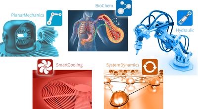
Wolfram SystemModeler 4 was released on July 23. SystemModeler 4 vastly expands support for modeling libraries, adds standardized deployment of models to other simulation tools, and deepens integration with Mathematica.
Key new features include:
- Library store with model libraries that are verified to work with SystemModeler
- Improved modeling features, new presentation mode for models, and export to FMI for deployment to other tools
- Model creation support from Mathematica, as well as improved workflow in the integration with Mathematica
- New Documentation Center with improved documentation
- Michael Tiller's Modelica book built-in
- Linux support
For more insight into SystemModeler 4 from Roger Germundsson, Director of Research & Development at Wolfram, and Jan Brugård, CEO of Wolfram MathCore, read their release blog post.
This article is provided by Jan Brugård (Wolfram MathCore)
Siemens PLM Software supports the FMI 2.0 initiative
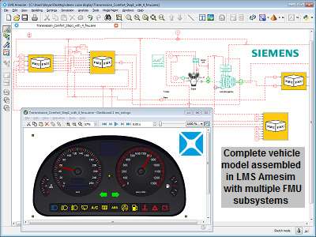
Thanks to its recognized expertise, Siemens PLM Software highly contributed to the recent successful release of the Functional Mock-up Interface (FMI) 2.0 specification. Now that this important milestone has been reached, Siemens PLM Software, in its continuous efforts to provide its customers with world-class high-end FMI functionalities, is ready to reflect the improved quality of this new version in the future releases of its products.
In an LMS Imagine.Lab Amesim™ model, you can import and run as many FMUs as you want. You can connect them together and benefit from each originating tool's specificities in the best possible environment for multi-domain system simulation. These powerful and flexible capabilities, available today, are always streamlined by straightforward import and export workflows. They make LMS Amesim an excellent choice of a heterogeneous simulation platform that truly enables large-scale, industrial and productive use of FMI.
As an active member of the FMI Steering Committee, Siemens PLM Software continues to promote FMI as a standard resolutely aimed at serving the needs of industrial users.Please visit the Siemens PLM Software website for more information.
This article is provided by Bruno Loyer (Siemens PLM Software)
Virtual software validation: ETAS Virtual ECU (EVE) complies with FMI standard
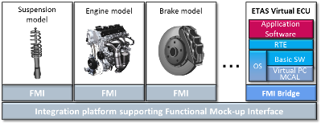
The ETAS Virtual ECU (EVE) is a PC-based platform for virtual software development and validation. Unlike previous virtual solutions, the ECU production software is used under realistic conditions in conjunction with RTA-OS. This enables validation of application software, basic software – or even the complete ECU software – to take place within a virtual environment. Testing can be conducted in realtime as well as non-realtime modes and supports a wide range of different applications that offer a high degree of consistency across the various stages of development.
Starting with v2.1, EVE complies with the FMI standard 1.0 and can be used together with any FMI based integration platform. Software validation use cases in a closed-loop setup can now be addressed early within the development process and independent of the availability of hardware prototypes – leading to increased development efficiency due to reduced development costs as well as improved software quality.
Thanks to the Functional Mock-up Interface standard, domain specific modeling tools can be used for the design of individual control and plant model(s) which also facilitates the reuse of existing artifacts within the development of ECUs.
The FMI support of EVE allows for early ECU software validation in a closed-loop setup on a PC and thus further extends the ETAS virtualization portfolio. Together with its expertise in Hardware-in-the-Loop testing (ETAS LABCAR) and virtual calibration (e.g. ETAS ASCMO), ETAS enables OEMs and suppliers to continuously frontload test, validation and calibration activities.
For further details about the ETAS Virtual ECU (EVE), please visit the ETAS website.
This article is provided by Silke Kronimus (ETAS GmbH)
RegressionTest Tool for Dymola
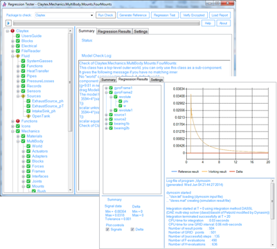
The RegressionTest Tool for Dymola has been developed for library developers to help them improve the quality of library releases. It provides automated routines for checking models, generating reference results and running regression tests. It is a standalone application that controls Dymola and calls functions from within a supplied Modelica library.
The tool can be run interactively using the Graphical User Interface shown or it can be run from the command line. Using the command line option enables tests to be scheduled to run nightly in a fully automated manner. Each test that is run by the tool generates an XML report that can be loaded in to the GUI for analysis.
The test results are presented in a hierarchical view that recreates the library structure with different icons used to highlight whether a model is correct, generates warnings or fails the test. When there are warnings or models fail the tests within a package these are propagated up through the library structure so that they can be quickly identified and located within the library.
Claytex developed this tool to support the development of our Modelica libraries and it is used to automate the regression testing of all our commercial Modelica libraries and customer projects.
This article is provided by Mike Dempsey (Claytex Services Limited)
Equation-Based Modelica Model Debugger
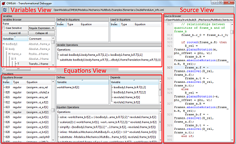
The OpenModelica equation-based model run-time debugger, which is part of the OpenModelica 1.9.1 release, (www.openmodelica.org ) helps the modeler finding the parts of the high-level equation-based model that cause problems in the low-level generated C-code that is used for the executing simulation. Without this debugging support it can be quite difficult to find the actual causes of errors in large models. This is the first debugging tool that allows debugging of Modelica equation-based models including tracing faults to individual equations.
The debugger/compiler traces all symbolic transformations done on the equation-based model on the way the executable code. This tracing is very efficient, with less than 1% overhead. Thus, the debugger can handle large models without noticable overhead.
This debugger for equation-based models is integrated with the graphical modeling graphical user interface OMEdit. There is also a debugger for algorithmic model debugging (functions and algorithms) with functionality such as setting breakpoints, single stepping, viewing variables etc., which is now available also in OMEdit. This algorithm debugger is integrated with the equation model debugger. Some typical usage scenarios:
- A numerical error occurs in the executing code, e.g., division by zero. The error occurs in low level executable C-code that bears no resemblance to the original Modelica code.
- A performance problem occurs, e.g. shattering, that is causing the solver to spend a lot of CPU time without advancing the simulation.
- The simulation runs to completion, but some values appear to be wrong. What parts of the models could influence these variables?
In all three cases the equation model debugger allows the user to browse through the sequence of transformations, all the way to the equations which cause the problems. These possibly faulty equations are pointed out by the debugger.
For more information, and download, see www.openmodelica.org .
This article is provided by Peter Fritzson (Linköping University)
FMI Blockset for Simulink 2014.1

Claytex will release version 2014.1 of the FMI Blockset for Simulink at the end of November. This new release will introduce support for the FMI 2.0 Co-simulation standard and still maintains support for the FMI 1.0 Co-simulation standard.
New cross-check results will be published to the FMI website when this version is officially released. We are testing to provide support for FMU's generated by CATIA, ControlBuild, Dymola, MapleSim and Simulation-X and will continue to extend the available test results as more tool vendors provide FMI 2.0 compliant FMU's for testing.
Claytex has also become a member of The MathWorks Connections Programme to further ensure that the development of our FMI tools is closely aligned with the continued development of Simulink as well as with the FMI standard itself.
This article is provided by Mike Dempsey (Claytex Services Limited)
New release for FMI Library: 2.0.1
The new FMI Library 2.0 adds full FMI 2.0 support to its unified C API for loading and working with Model Exchange and Co-simulation FMUs, and is released under a permissive BSD license. This is suitable in contexts where FMUs need to be interfaced from new or existing applications. The 2.0.1 release adds minor improvements.
This article is provided by Emil Fredriksson (Modelon AB)
PyFMI 2.0b1 now available
We are glad to announce the release of PyFMI 2.0b1! With the new release, support for the recently published FMI 2.0 standard has been included. Together with the features related to FMI 1.0, PyFMI now supports:
- Import and simulation of Co-Simulation FMUs compliant with FMI 2.0
- Import and simulation of Model Exchange FMUs compliant with FMI 2.0
- Accessing directional derivatives
For more information and documentation, see the PyFMI home page.
We invite all users to test PyFMI 2.0b1 and to report problems and to provide feedback at our forum.
PyFMI is a Python package that offers integration of Functional Mock-up Units (FMUs) into the Python environment. With PyFMI’s companion package Assimulo, FMUs are simulated with a wide range of quality integration algorithms, including CVode from the Sundials suite, Radau and Implicit/Explicit Euler.
This article is provided by Emil Fredriksson (Modelon AB)
FMI Toolbox for MATLAB/Simulink version 1.8.3 released
The FMI Toolbox for MATLAB®/Simulink® 1.8.2 and 1.8.3 are now released. Now with improved scripting capabilities both for the Simulink® FMU blocks and the MATLAB® interface, this gives powerful capabilities to automate workflows and handling FMUs with a large set of variables. Furthermore, the export of Simulink® models is improved, giving new possibilities for deploying models.
New in versions 1.8.2 and 1.8.3:- Support for using the FMUs binary when exporting Simulink models containing FMU blocks.
- New script functions for the Simulink® blocks.
- Improved MATLAB® interface with better support for loading FMUs, getting direct dependencies and filtering the FMUs variables.
- Support for FMU Co-Simulation export from Simulink with Global (tunable) parameters
For more information and documentation, please visit the FMI Toolbox for MATLAB®/Simulink® web page.
This article is provided by Emil Fredriksson (Modelon AB)
JModelica.org 1.15b1
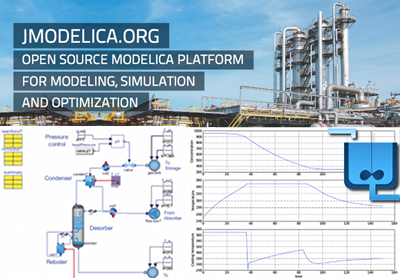
We are proud to announce the release of JModelica.org 1.15b1. This release introduces a number of improvements to the platform, including:
- Support for export of FMUs according to the FMI 2.0 standard, Model Exchange and Co-simulation
- Support for import of FMUs according to the FMI 2.0 standard, Model Exchange and Co-simulation, in Python (see separate article about PyFMI)
- Improved simulation compliance for the Modelica Standard Library, including support for over-constrained initialization systems and improved numerical algorithms in the FMU runtime system – follow our progress on-line at our test server
- Updated dynamic optimization framework based on CasADi 2.0
JModelica.org is a Modelica and FMI-based open source platform for optimization, simulation and analysis of complex dynamic systems. Find out more at www.jmodelica.org.
This article is provided by Emil Fredriksson (Modelon AB)
LMS Imagine.Lab Amesim™ Provides State-of-the-art Platform Features for Modelica Users
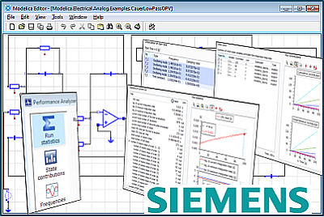
LMS Amesim from Siemens PLM Software includes a wide variety of platform features that make model development easier. In some cases, a developer has created a Modelica model, but needs to better understand its frequency content and diagnose which parts of their model could speed up the simulation. The performance analyzer is an LMS Amesim platform feature that can address these needs. This feature generates a detailed report as the simulation proceeds, giving the user insight into the performance of the solvers on their model.
With the information provided by the performance analyzer, the user can improve the CPU performance of their system. The "Run statistics" view of the performance analyzer provides a set of metrics such as the CPU time, integration step size, and selected solver order. The "State contributions" view displays the contribution of each state variable to the integration step size. This knowledge can help model developers to assess whether modifying parameters or eliminating a component altogether can improve their simulation performance without altering the results more than desired. Finally, the "Frequencies" view allows the developer to identify the eigenfrequencies of their system.
Modelica developers can leverage tools like the performance analyzer and other LMS Amesim platform features to gain valuable insight during the model development process. With this information, developers can improve their Modelica models and increase their productivity.
Please visit the Siemens PLM Software website for more information.
This article is provided by Michael Sasena (Siemens PLM Software)
OpenModelica 1.9.1 final Release

OpenModelica is an open-source model-based cyber-physical mathematical modeling, architectural description and simulation environment intended for industrial and academic usage. Its long-term development is supported by a non-profit organization – the Open Source Modelica Consortium (OSMC), www.openmodelica.org , with many company, institute, and university members.
The main highlights for this release:
- Further improved support for a number of libraries including MSL 3.2.1, ModelicaTest 3.2.1, PetriNet, Buildings, PowerSystems, OpenHydraulics, ThermoPower, ThermoSysPro, etc. See trend .
- Further enhanced OpenModelica compiler coverage and scalability.
- Significantly improved simulation support for libraries using Fluid and Media.
- Dynamic model debugger for equation-based models integrated with OMEdit. This is the first such debugger in any Modelica tool. Also supports function algorithm debugging in OMEdit.
- Enhanced performance analyzer integrated with the equation model debugger.
- Dynamic Optimization with collocation built into OpenModelica.
- GUI and plotting improvements, including editing of model parameter values and resimulation in OMEdit without recompilation after parameter changes.
- A large number of compiler and run-time improvements, including, but not limited to: Automatic differentiation of algorithms and functions; New faster initialization that handles over- determined systems, under-determined systems, or both; Some support for general solving of mixed systems of equations; Better handling of array subscripts and dimensions; Improved support for reduction functions and operators; Better handling of events/zero crossings; Better support for partial functions; Support for sparse solvers; New faster unit checking implementation; and more.
The development work is organized by the Open Source Modelica Consortium, currently 46 organizations.
For more information, see www.openmodelica.org .
This article is provided by Peter Fritzson (Linköping University)
Data-based modeling and model-based calibration with ETAS ASCMO: Now also support of FMI standard
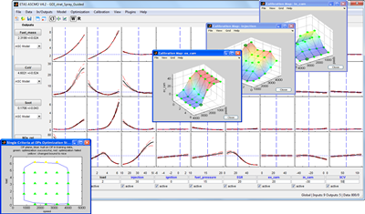
ETAS ASCMO enables the efficient development of accurate data-based models, allowing for advanced model-based calibration and data-based modeling. High-accuracy models are generated automatically by using modern statistical learning processes (Gaussian processes) and form the basis for significant time and cost savings within the development process. Even highly complex system behaviors can be described without the prior need for detailed system knowledge or special mathematical expertise in the used algorithm. These models can be used tool internal for optimizations or can be exported to different environments such as Matlab®/Simulink® or C-Code for being used as virtual sensors or meta-models.
With v4.5 recently being launched, ETAS ASCMO now supports FMI 1.0 and 2.0 for Co-Simulation. The generated high-accuracy models can be exported as Functional Mock-up Units (FMUs) and are used to optimize parameters of real systems such as engine ECUs or plant models. Both, steady state and dynamic/transient system behaviors can be captured.
One prominent use case addresses the efficient calibration of diesel- and gasoline engines. When used by Volkswagen in production calibration for example, ETAS ASCMO allowed for reduced fuel consumption by two to four per cent.
The FMI support of ETAS ASCMO emphasizes once more the numerous activities of ETAS in the area of virtual validation and calibration based on standards. Further examples of its open tool landscape in the X-in-the-Loop (XiL) context include EVE, the ETAS Virtual ECU as well as the FMI based integration and simulation platform that is currently being developed.
For further details about ETAS ASCMO, please visit the ETAS website.
This article is provided by Silke Kronimus (ETAS GmbH)
Dymola 2015 FD01
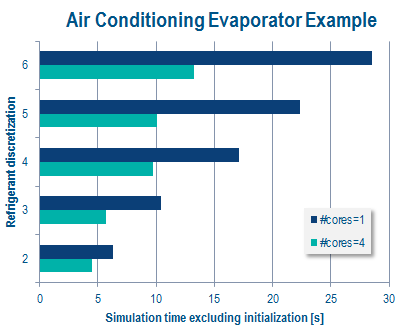
Dassault Systèmes are delighted to announce that Dymola® 2015 FD01 will be released on November 26, 2014. The key highlights are:
Functional Mockup Interface 2.0
The FMI 2.0 specification has been finalized by the Modelica Association. Dymola 2015 FD01 has full support for FMI 1.0 and FMI 2.0.
Multi-core simulation and Favorites packages
Dymola 2015 FD01 now has multi-core support to reduce simulation times by a factor of 2-3 on a standard processor for certain kinds of models. The symbolic analysis of model equations is used to partition code for parallel execution on multiple cores. No manual intervention is needed.
Convenient creation of Favorites packages facilitates customized models. Dragging in a 'favorite' inserts a reference to the original model. Parameter modifications can be added to represent specific components.
Integration with Java, Python and JavaScript
Dymola can run as a local web service, making it possible to send commands from Java, Python and JavaScript. This allows interactive web pages to use Dymola to run simulations, display models, set parameters and show simulation results as plots or animations. Such an approach makes it possible for non-specialist Modelica users to access the simulation capabilities of Dymola.
Dymola 2015
Dymola 2015 was released on June 6, 2014.
A new Flight Dynamics Library was also released that delivers powerful new modeling and simulation capabilities. Flight dynamics is a new domain for Dymola users, with the library enabling flight load analysis, control law design, mission simulation and aircraft design analysis.
Dymola 2015 has full 32-bit and 64-bit support on both Windows and Linux.
For more information see www.dymola.com.
This article is provided by Dag Brück (Dassault Systèmes AB, Lund)
TLK FMI Suite - Simulation of simulator independent models
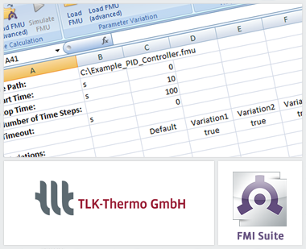
FMI Suite provides tools for export, execution, and co-simulation of models based on the FMI standard.
Currently provided modules:
- FMI Suite Simulink - Simulate FMUs in Matlab Simulink
- FMI Suite Excel - Simulations and parameter variations in Excel
- FMI Suite Labview - Simulate FMUs in LabVIEW
- FMI Suite C++ - Simulate FMUs from your own C++ Code
- FMU Configurator - Tool for the configuration of FMUs
- TISC FMU Controller - Coupling of a FMU with the co-simulation environment TISC
News:
- Improved and unified user interface
- FMU analysis feature for model dependencies
- FMI Suite Excel offers extensive parameter studies alongside simulation of FMUs
FMI Suite for C++ and TISC FMU Controller are now also available for Linux.
For further Information see www.tlk-thermo.com
This article is provided by Matthias Kwak (TLK-Thermo GmbH)
TLK DaVE - Data Visualization Environment
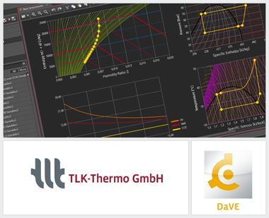
With DaVE, TLK-Thermo provides a visualization and simulation environment. The data can be imported from various offline and online sources, using different file formats. A direct simulation of FMUs is also possible.
DaVE contains several instruments (e.g. 2D-plot, round instruments) which can display data in various forms. The displays can be exported as common picture formats and vector graphics such as PDF files. Thus, DaVE is a very useful tool during the thermal development process and in presentations.
An online visualization can be created via connection to our co-simulation environment TISC and via direct connection of measurement techniques at test-benches.
Particularly for online and offline display of thermal data, DaVE is able to provide state diagrams (ph, pv, Th, Ts and hx).
The latest version 1.3.0 of DaVE contains the following improvements and features:
- Create vector plots to show the temperature distribution inside a heat exchanger and other thermal plots
- In state diagrams thermodynamic changes of state can be defined between two state points and displayed accordingly (e.g. isothermal or isobaric change of state)
- Instruments now can be more easily configured for display of multiple variables
- The user-friendly, time-efficient handling of large data sets with many variables has been further increased
- Merging various data sources with different time intervals to data tables with uniform time intervals
For further information see www.viewer-suite.com or contact us at software@tlk-thermo.com
This article is provided by Matthias Kwak (TLK-Thermo GmbH)
Dassault Systèmes Announces Extended FMI Support
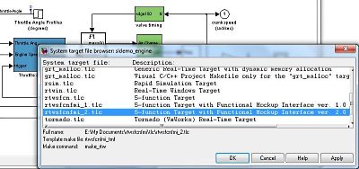
Committed to the development and industrial deployment of the Functional Mockup Interface (FMI), Dassault Systèmes is taking another step to promote the use of FMI and broaden its user community. In particular, the transition to FMI 2.0 is supported and encouraged.
- "The development of FMI 2.0 enables new possibilities to support reliable model-exchange as well as co-simulation with variable step-size integrators and proper error control, which are completely beyond the capabilities of FMI 1.0" says Hilding Elmqvist, CTO Systems at Dassault Systèmes.
To promote the deployment of FMI in general and FMI 2.0 and beyond in particular, Dassault Systèmes will make new functionality available to all Dymola users during Q1 2015 on top of Dymola 2015 FD01 and in the R2016 release of 3DEXPERIENCE:
- New import of Functional Mockup Units (FMUs) to Simulink.
- New FMU export from Simulink supporting FMI 2.0 Model Exchange and Co-Simulation, and enhancement of FMI 1.0 export.
- Improved user interfaces for FMU export and import.
Dassault Systèmes is also currently developing the capability to export and import FMUs with icons, acausal connectors, as well as reliable co-simulation leveraging the best of FMI 2.0.
For more information about availability, please see www.dymola.com/fmi.
This article is provided by Dag Brück (Dassault Systèmes AB, Lund)
Latest MapleSim release offers new tools for design exploration
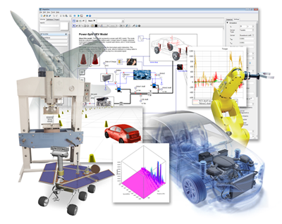
Maplesoft™ has announced a new release of MapleSim™, the advanced system-level modeling and simulation platform. This release makes it substantially easier to explore and validate designs, create and manage libraries of custom components, and use MapleSim models within the engineering toolchain.
MapleSim offers a modern approach to physical modeling and simulation, dramatically reducing model development and analysis time while producing fast, high-fidelity simulations. In MapleSim 7, a new results manager provides greater flexibility when investigating simulation results and exploring designs. It is now possible to compare multiple simulation runs at the click of a button, including simulations of a single model and simulations of different models. Engineers can instantly plot the behavior of any variable, including variables that were not explicitly probed during the simulation. Other tools available through the results manager include the ability to easily visualize the correspondence between the 2-D plot results and the 3-D visualization of the model during simulation.
To support model creation, MapleSim 7 also makes it significantly easier to create, manage, and share libraries of custom components. As well, MapleSim 7 also expands the support of the Modelica language so that more Modelica definitions can be used directly inside MapleSim.
The MapleSim Connector for FMI, which allows engineers to share very efficient, high-fidelity models created in MapleSim with other modeling tools, has also been updated with this release. FMI (Functional Mockup Interface) is an industry standard for defining models to facilitate the sharing of models across different tool sets. For MapleSim 7, the MapleSim Connector for FMI supports more export options for co-simulation and model exchange.
As part of the MapleSim 7 family of products, Maplesoft has also released a new component library. The MapleSim Battery Library, which is available as a separate add-on, allows engineers to incorporate physics-based predictive models of battery cells into their multidomain models so they can take battery behavior into account early in the design process.
This article is provided by Tina George (Maplesoft)